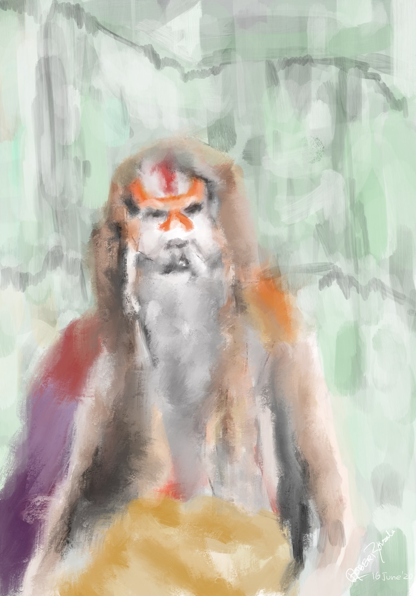
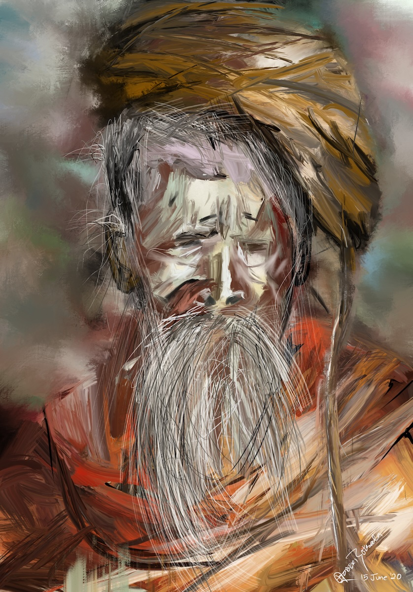

साधु
I have always been curious to learn about the life of sadhu and sadhawi. This is a series of paintings dedicated to all those Bairagi who I have come across mostly at home, Maikhola, Pashupatinath, Devghat and everywhere.

